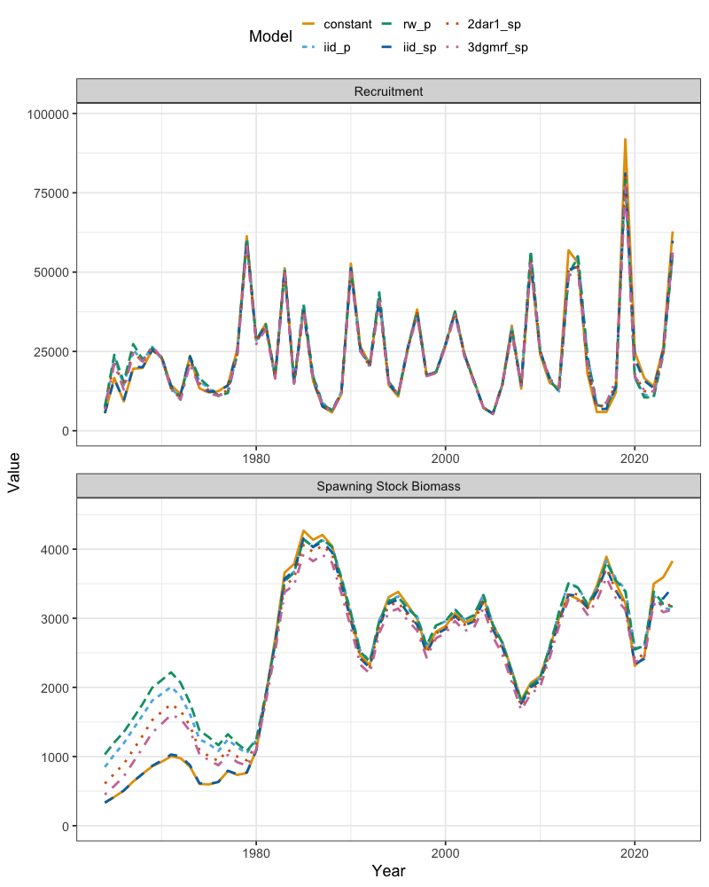
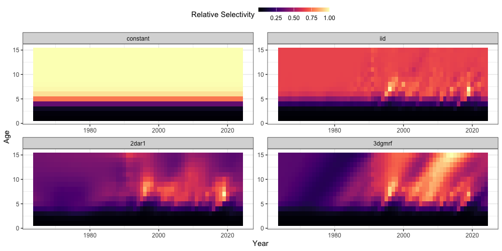

Random Effects (Selectivity Example; Eastern Bering Sea Pollock)
n_single_region_ebs_pollock_randomeff_case_study.RmdSeveral options are available to set up random effects in
SPoRC. In this vignette, we will demonstrate how fishery
selectivity random effects might be set up, using Eastern Bering Sea
(EBS) as a case study. We will first load in the relevant packages and
datasets.
The SPoRC framework allows flexible control over how
fishery selectivity random effects are modeled. In general, the
following arguments work together to define the random effects
structure:
-
cont_tv_fish_sel: form of continuous time-varying selectivity for each fleet. -
fishsel_pe_pars_spec: process error parameter estimation across regions and sexes. -
fish_sel_devs_spec: structure of selectivity deviations across regions, sexes, and fleets. -
corr_opt_semipar: correlation structure options for semi-parametric selectivity models.
Additional arguments (fish_sel_blocks,
fish_sel_model, fish_fixed_sel_pars_spec,
fish_q_blocks, and fish_q_spec) provide
further control over blocks, functional forms, fixed effects, and
catchability. As an example, Fleet 1 is modeled with independent
year-to-year deviations on logistic selectivity parameters, estimating
all process error parameters, with no correlation suppression and full
estimation of deviations:
model_inputs <- Setup_Mod_Fishsel_and_Q(
input_list = inputs,
fish_sel_model = "logist1_Fleet_1",
cont_tv_fish_sel = c("iid_Fleet_1"),
fishsel_pe_pars_spec = "est_all",
corr_opt_semipar = "none",
fish_sel_devs_spec = "est_all"
)In this vignette, we extend the single-region pollock example to evaluate different random effects structures for fishery selectivity. To do this, we define a wrapper function that constructs the input list for the Eastern Bering Sea pollock model, allowing the user to specify four arguments that control the structure of selectivity random effects. By iterating over combinations of these options, we can investigate how different assumptions about selectivity-related random effects influence model fit and inference.
We keep survey selectivity fixed for simplicity (to focus the comparison on the fishery), and use the Laplace approximation to integrate out the random effects. The setup for recruitment, mortality, biological processes, and survey indices follows the earlier vignette “Setting up a Single Region Model (Eastern Bering Sea Pollock)”, so here we only highlight the sections that differ.
#' Setup Single-Region Population Model for EBS Pollock
#'
#' Constructs a single-region population model input list, tailored to the
#' \code{sgl_rg_ebswp_data} dataset. This function initializes dimensions,
#' recruitment, natural mortality, biologicals, movement, tagging, catch,
#' fishery indices and compositions, survey indices and compositions,
#' selectivity and catchability, and component weighting.
#'
#' @param cont_tv_fish_sel Character vector. Whether to estimate continuous
#' time-varying fishery selectivit (see \code{\link{Setup_Mod_FishIdx_and_Comps}}).
#' @param fishsel_pe_pars_spec Character vector. Specification for penalized
#' likelihood parameters for fishery selectivity deviations (see \code{\link{Setup_Mod_FishIdx_and_Comps}}).
#' @param corr_opt_semipar Character vector. Correlation options for
#' semi-parametric selectivity (see \code{\link{Setup_Mod_FishIdx_and_Comps}}).
#' @param fish_sel_devs_spec Character vector. Specification of fishery
#' selectivity deviations to be estimated (see \code{\link{Setup_Mod_FishIdx_and_Comps}}).
#'
#' @details
#' The function relies on the global dataset \code{sgl_rg_ebswp_data} to provide
#' years, ages, weight-at-age, maturity-at-age, observed catches, fishery and
#' survey indices, age and length compositions, and other required inputs.
#'
#' The model is configured for:
#' - one region
#' - one sex
#' - one fishery fleet
#' - three survey fleets
#'
#' Natural mortality (\eqn{M}) is fixed at:
#' - 0.9 for age-1,
#' - 0.45 for age-2,
#' - 0.3 for age-3+.
#'
#' Recruitment is modeled using a Beverton–Holt stock–recruitment function
#' with fixed steepness.
#'
#' Selectivity and catchability are parameterized separately for fishery and
#' survey fleets, with user control over random effects and correlation
#' structure for fishery selectivity deviations.
#'
#' @return A fully specified model input list to pass onto subsequent model fitting functions.
#'
#' @seealso
#' \code{\link{Setup_Mod_Dim}}, \code{\link{Setup_Mod_Rec}},
#' \code{\link{Setup_Mod_Biologicals}}, \code{\link{Setup_Mod_Movement}},
#' \code{\link{Setup_Mod_Tagging}}, \code{\link{Setup_Mod_Catch_and_F}},
#' \code{\link{Setup_Mod_FishIdx_and_Comps}},
#' \code{\link{Setup_Mod_SrvIdx_and_Comps}},
#' \code{\link{Setup_Mod_Fishsel_and_Q}}, \code{\link{Setup_Mod_Srvsel_and_Q}},
#' \code{\link{Setup_Mod_Weighting}}
#'
pol_model <- function(cont_tv_fish_sel,
fishsel_pe_pars_spec,
corr_opt_semipar,
fish_sel_devs_spec
) {
## Initialize model dimensions and data list----
input_list <- Setup_Mod_Dim(
years = sgl_rg_ebswp_data$years,
# vector of years
ages = sgl_rg_ebswp_data$ages,
# vector of ages
lens = NA,
# number of lengths
n_regions = 1,
# number of regions
n_sexes = 1,
# number of sexes
n_fish_fleets = 1,
# number of fishery fleets
n_srv_fleets = 3, # number of survey fleets
verbose = FALSE
)
inv_steepness <- function(s) qlogis((s - 0.2) / 0.8)
# Setup recruitment stuff (using defaults for other stuff)
input_list <- Setup_Mod_Rec(
input_list = input_list,
# Model options
do_rec_bias_ramp = 0,
# do bias ramp (0 == don't do bias ramp, 1 == do bias ramp)
sigmaR_switch = 1,
# when to switch from early to late sigmaR (switch in first year)
ln_sigmaR = log(c(5, 1)),
# Starting values for early and late sigmaR
rec_model = "bh_rec",
# recruitment model
steepness_h = inv_steepness(0.623013),
h_spec = "fix",
# fixing steepness
sigmaR_spec = "fix",
# fix early sigmaR and late sigmaR
init_age_strc = 1,
ln_global_R0 = 10,
t_spawn = 0.25,
equil_init_age_strc = 2
)
# Setup a fixed natural mortality array for use
fix_natmort <- array(0, dim = c(input_list$data$n_regions, length(input_list$data$years), length(input_list$data$ages), 1))
fix_natmort[,,1,] <- 0.9 # age 1 M
fix_natmort[,,2,] <- 0.45 # age 2 M
fix_natmort[,,-c(1,2),] <- 0.3 # age 3+ M
input_list <- Setup_Mod_Biologicals(
input_list = input_list,
# Data inputs
WAA = sgl_rg_ebswp_data$WAA,
MatAA = sgl_rg_ebswp_data$MatAA,
# Model options
# mean and sd for M prior
fit_lengths = 0,
# don't fit length compositions
M_spec = "fix",
# fixing natural mortality
Fixed_natmort = fix_natmort
)
# Setup movement stuff (using defaults for other stuff)
input_list <- Setup_Mod_Movement(
input_list = input_list,
use_fixed_movement = 1,
Fixed_Movement = NA,
do_recruits_move = 0
)
# Setup tagging stuff
input_list <- Setup_Mod_Tagging(input_list = input_list, UseTagging = 0)
input_list <- Setup_Mod_Catch_and_F(
input_list = input_list,
# Data inputs
ObsCatch = sgl_rg_ebswp_data$ObsCatch,
Catch_Type = sgl_rg_ebswp_data$Catch_Type,
UseCatch = sgl_rg_ebswp_data$UseCatch,
# Model options
Use_F_pen = 1,
# whether to use f penalty, == 0 don't use, == 1 use
sigmaC_spec = "fix",
# fixing catch standard deviation
ln_sigmaC = array(log(0.05), dim = c(1, length(input_list$data$years), 1))
# starting / fixed value for catch standard deviation
)
input_list <- Setup_Mod_FishIdx_and_Comps(
input_list = input_list,
# data inputs
ObsFishIdx = sgl_rg_ebswp_data$ObsFishIdx,
ObsFishIdx_SE = sgl_rg_ebswp_data$ObsFishIdx_SE,
UseFishIdx = sgl_rg_ebswp_data$UseFishIdx,
ObsFishAgeComps = sgl_rg_ebswp_data$ObsFishAgeComps,
UseFishAgeComps = sgl_rg_ebswp_data$UseFishAgeComps,
ISS_FishAgeComps = sgl_rg_ebswp_data$ISS_FishAgeComps,
ObsFishLenComps = array(NA_real_, dim = c(1, length(input_list$data$years), length(input_list$data$lens), 1, 1)),
UseFishLenComps = array(0, dim = c(1, length(input_list$data$years), 1)),
ISS_FishLenComps = NULL,
# Model options
fish_idx_type = c("biom"),
# indices for fishery
FishAgeComps_LikeType = c("Multinomial"),
# age comp likelihoods for fishery fleet
FishLenComps_LikeType = c("none"),
# length comp likelihoods for fishery
FishAgeComps_Type = c("agg_Year_1-terminal_Fleet_1"),
# age comp structure for fishery
FishLenComps_Type = c("none_Year_1-terminal_Fleet_1")
# length comp structure for fishery
)
# Setup survey indices and compositions
input_list <- Setup_Mod_SrvIdx_and_Comps(
input_list = input_list,
# data inputs
ObsSrvIdx = sgl_rg_ebswp_data$ObsSrvIdx,
ObsSrvIdx_SE = sgl_rg_ebswp_data$ObsSrvIdx_SE,
UseSrvIdx = sgl_rg_ebswp_data$UseSrvIdx,
ObsSrvAgeComps = sgl_rg_ebswp_data$ObsSrvAgeComps,
ISS_SrvAgeComps = sgl_rg_ebswp_data$ISS_SrvAgeComps,
UseSrvAgeComps = sgl_rg_ebswp_data$UseSrvAgeComps,
ObsSrvLenComps = array(NA_real_, dim = c(1, length(input_list$data$years), length(input_list$data$lens), 1, 3)),
UseSrvLenComps = array(0, dim = c(1, length(input_list$data$years), 3)),
ISS_SrvLenComps = NULL,
# Model options
srv_idx_type = c("biom", "biom", "biom"),
# abundance and biomass for survey fleet 1, 2, and 3
SrvAgeComps_LikeType = c("Multinomial", "Multinomial", "Multinomial"),
# survey age composition likelihood for survey fleet 1, 2, and 3
SrvLenComps_LikeType = c("none", "none", "none"),
# survey length composition likelihood for survey fleet 1, 2, and 3
SrvAgeComps_Type = c(
"agg_Year_1-terminal_Fleet_1",
"agg_Year_1-terminal_Fleet_2",
"none_Year_1-terminal_Fleet_3"
),
# survey age comp type
SrvLenComps_Type = c(
"none_Year_1-terminal_Fleet_1",
"none_Year_1-terminal_Fleet_2",
"none_Year_1-terminal_Fleet_3"
)
# survey length comp type
)
# Setup fishery selectivity and catchability
input_list <- Setup_Mod_Fishsel_and_Q(
input_list = input_list,
# Model options (NOTE: Iterating Different Fishery Selectivity Random Effects Here!)
cont_tv_fish_sel = cont_tv_fish_sel, # fishery selectivity, whether continuous time-varying
fishsel_pe_pars_spec = fishsel_pe_pars_spec, # doing penalized likelihood for selex devs
fish_sel_devs_spec = fish_sel_devs_spec, # estimating all sel devs
corr_opt_semipar = corr_opt_semipar, # correlation options
# fishery selectivity blocks
fish_sel_blocks = c("none_Fleet_1"),
# fishery selectivity form
fish_sel_model = c("logist1_Fleet_1"),
# fishery catchability blocks
fish_q_blocks = c("none_Fleet_1"),
# whether to estiamte all fixed effects for fishery selectivity
fish_fixed_sel_pars_spec = c("est_all"),
# whether to estiamte all fixed effects for fishery catchability
fish_q_spec = c("est_all")
)
# Setup survey selectivity and catchability
input_list <- Setup_Mod_Srvsel_and_Q(
input_list = input_list,
# Model options
# survey selectivity blocks
srv_sel_blocks = c("none_Fleet_1", "none_Fleet_2", "none_Fleet_3"),
# survey selectivity form
srv_sel_model = c(
"logist1_Fleet_1",
"logist1_Fleet_2",
"logist1_Fleet_3"
),
# survey catchability blocks
srv_q_blocks = c("none_Fleet_1", "none_Fleet_2", "none_Fleet_3"),
# whether to estiamte all fixed effects for survey selectivity
srv_fixed_sel_pars_spec = c("est_all", "est_all", "est_shared_f_2"),
# whether to estiamte all fixed effects for survey catchability
srv_q_spec = c("est_all", "est_all", "est_all")
)
input_list <- Setup_Mod_Weighting(
input_list = input_list,
Wt_Catch = 1,
Wt_FishIdx = 1,
Wt_SrvIdx = 1,
Wt_Rec = 1,
Wt_F = 1,
Wt_Tagging = 0,
Wt_FishAgeComps = array(1, dim = c(input_list$data$n_regions,
length(input_list$data$years),
input_list$data$n_sexes,
input_list$data$n_srv_fleets)),
Wt_FishLenComps = array(1, dim = c(input_list$data$n_regions,
length(input_list$data$years),
input_list$data$n_sexes,
input_list$data$n_srv_fleets)),
Wt_SrvAgeComps = array(1, dim = c(input_list$data$n_regions,
length(input_list$data$years),
input_list$data$n_sexes,
input_list$data$n_srv_fleets)),
Wt_SrvLenComps = array(1, dim = c(input_list$data$n_regions,
length(input_list$data$years),
input_list$data$n_sexes,
input_list$data$n_srv_fleets))
)
return(input_list)
}Once the function pol_model() is defined, we can explore
alternative random effects structures by iterating across argument
combinations. For illustration, we define a small set of candidate
models that vary only in the specification of fishery selectivity random
effects:
- Constant selectivity (no random effects),
- iid selectivity (random effects on parameters),
- Random walk selectivity (random effects on parameters),
- Two-dimensional autoregressive selectivity (year × age; random effects are semi-parametric),
- Three-dimensional autoregressive selectivity (year × age × cohort; random effects are semi-parametric),
- Independent deviations (random effects are semi-parametric).
The dataframe below specifies the argument settings for each scenario.
# models to iterate through
pol_model_var <- data.frame(
cont_tv_fish_sel = c("none_Fleet_1", "iid_Fleet_1", "rw_Fleet_1", "2dar1_Fleet_1", "3dcond_Fleet_1", "3dcond_Fleet_1"),
fishsel_pe_pars_spec = c("none", rep("est_all", 5)),
fish_sel_devs_spec = c("none", rep("est_all", 5)),
corr_opt_semipar = c(rep(NA, 5), "corr_zero_y_b_c")
)We can now loop through each row to generate the model inputs, fit the model using Laplace approximation, and store the results. The model fitting process can take a while!
Note: the random argument specifies
which parameters should be treated as random effects in the Laplace
approximation. In this case, it is set to "ln_fishsel_devs"
whenever selectivity deviations are modeled as random; otherwise, it is
NULL.
# model storage
models <- list()
# loop through models
for(i in 1:nrow(pol_model_var)) {
# if selectivity deviations should be treated as random
if(str_detect(pol_model_var$cont_tv_fish_sel[i], "none")) random <- NULL
else random <- "ln_fishsel_devs"
# get input list
input_list <- pol_model(cont_tv_fish_sel = pol_model_var$cont_tv_fish_sel[i],
fishsel_pe_pars_spec = pol_model_var$fishsel_pe_pars_spec[i],
fish_sel_devs_spec = pol_model_var$fish_sel_devs_spec[i],
corr_opt_semipar = if(is.na(pol_model_var$corr_opt_semipar[i])) NULL else pol_model_var$corr_opt_semipar[i]
)
# extract out lists updated with helper functions
data <- input_list$data
parameters <- input_list$par
mapping <- input_list$map
# Fit model
ebswp_rtmb_model <- fit_model(data,
parameters,
mapping,
random = random,
newton_loops = 3,
silent = FALSE
)
ebswp_rtmb_model$sdrep <- RTMB::sdreport(ebswp_rtmb_model)
sdrep <- ebswp_rtmb_model$sdrep
rep <- ebswp_rtmb_model$rep
models[[i]] <- ebswp_rtmb_model
} # end i loopAfter fitting the models, we can summarize and compile the results to compare how alternative random effects structures influence model estimates and inference. In this example, we focus on differences in recruitment, spawning stock biomass, and fishery selectivity estimates.
model_names <- c("constant", "iid_p", "rw_p", "2dar1_sp", "3dgmrf_sp", "iid_sp")
fishsel_all_df <- data.frame() # empty dataframe to bind to
ts_all_df <- data.frame() # empty dataframe to bind to
for(i in 1:length(models)) {
# Get recruitment time-series
rec_series <- reshape2::melt((models[[i]]$rep$Rec)) %>%
mutate(se = models[[i]]$sdrep$sd[names(models[[i]]$sdrep$value) == 'log(Rec)'] * t(models[[i]]$rep$Rec))
rec_series$Par <- "Recruitment"
rec_series$Model <- model_names[i]
# Get SSB time-series
ssb_series <- reshape2::melt((models[[i]]$rep$SSB)) %>%
mutate(se = models[[i]]$sdrep$sd[names(models[[i]]$sdrep$value) == 'log(SSB)'] * t(models[[i]]$rep$SSB))
ssb_series$Par <- "Spawning Stock Biomass"
ssb_series$Model <- model_names[i]
# Get fishery selectivity estimates
fishsel_df <- reshape2::melt(models[[i]]$rep$fish_sel) %>%
rename(Region = Var1, Year = Var2, Age = Var3, Sex = Var4, Fleet = Var5) %>%
mutate(value = value/max(value),
Year = Year + 1963)
fishsel_df$Model <- model_names[i]
# bind together
ts_df <- rbind(ssb_series,rec_series) %>%
dplyr::rename(Region = Var1, Year = Var2) %>%
dplyr::mutate(Year = Year + 1963)
ts_all_df <- rbind(ts_all_df, ts_df)
fishsel_all_df <- rbind(fishsel_df, fishsel_all_df)
} # end i loop
# Refactor to order models
fishsel_all_df <- fishsel_all_df %>% mutate(Model = factor(Model, levels = c("constant", "iid_p", "rw_p", "iid_sp", "2dar1_sp", "3dgmrf_sp")))
ts_df <- ts_df %>% mutate(Model = factor(Model, levels = c("constant", "iid_p", "rw_p", "iid_sp", "2dar1_sp", "3dgmrf_sp")))Inspecting recruitment, the time series are generally consistent
across models in both magnitude and trend. Spawning stock biomass
estimates are also similar among models, though terminal year estimates
differ slightly: the three-dimensional (3d) and parametric
iid selectivity option generally yields the lowest biomass
estimates, while the constant selectivity option produces
the highest.
cols <- c("#E69F00", "#56B4E9", "#009E73", "#0072B2", "#D55E00", "#CC79A7") # colors
ggplot(ts_all_df, aes(x = Year, y = value,
ymin = value - (1.96 * se), ymax = value + (1.96 * se),
color = Model, fill = Model)) +
# geom_ribbon(alpha = 0.3, color = NA) +
geom_line(lwd = 1.3) +
facet_wrap(~Par, scales = 'free', ncol = 1) +
scale_color_manual(values = cols) +
scale_fill_manual(values = cols) +
labs(y = "Value") +
theme_bw(base_size = 18) +
theme(legend.position = c(0.085, 0.9),
legend.background = element_blank()) +
ylim(0, NA) +
labs(x = 'Year', y = 'Value', color = 'Model', fill = 'Model')
Examining fishery selectivity, the iid and
2dar1 options are broadly similar, although
2dar1 shows more structure at older ages due to correlation
constraints, whereas iid deviations tend to revert to the
mean when data are sparse. By contrast, the 3d option
exhibits pronounced cohort variability (diagonal patterns) and maintains
selectivity patterns at older, less-informed ages through
correlation-based smoothing. Due to the assumption of parametric
selectivity, both the iid_p and rw_p
selectivity options appear relatively different (i.e., constrained to
remain logistic).
ggplot(fishsel_all_df, aes(x = Year, y = Age, fill = value)) +
geom_tile() +
scale_fill_continuous(palette = "magma") +
facet_wrap(~Model, scales = 'free') +
theme_bw(base_size = 15) +
labs(x = 'Year', y = 'Age', fill = 'Relative Selectivity') +
theme(legend.position = "right",
legend.key.size = unit(0.2, "cm"),
legend.key.height = unit(1, "cm"))